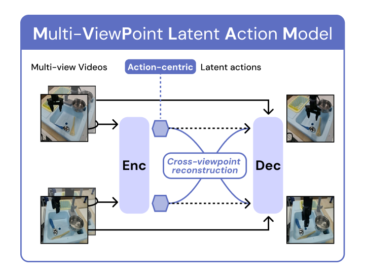
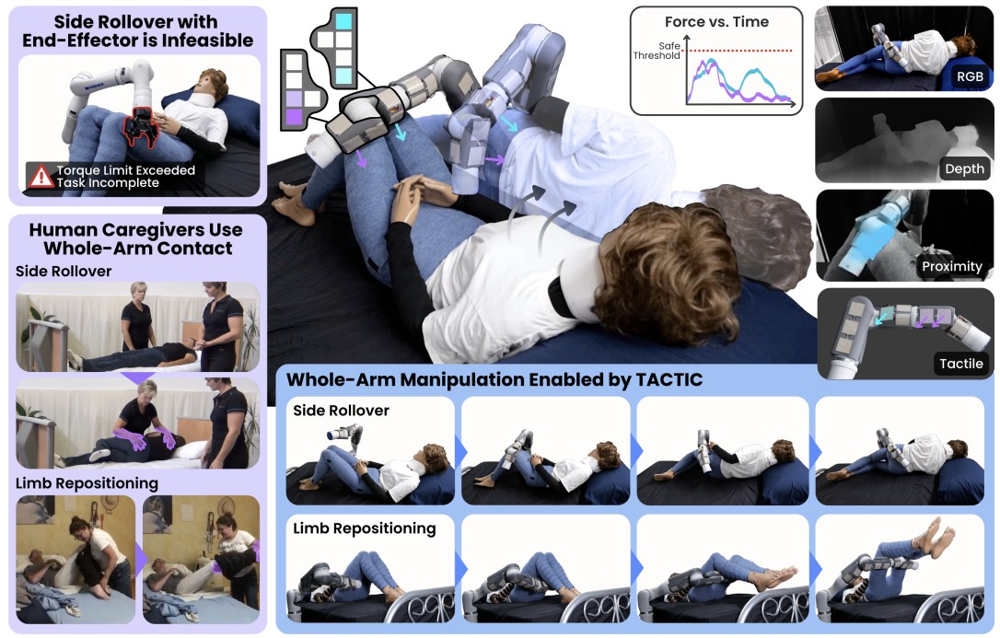
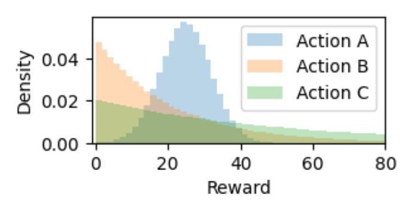

|
Dohyeok Lee I'm a Ph.D. student in Electrical and Computer Engineering at Seoul National University (SNU), advised by Prof. Jungwoo Lee. Currently, I am a visiting Ph.D. student working with Prof. Tapomayukh Bhattacharjee at Cornell University. Previously, I received my M.S. in ECE from SNU in 2024 and B.S. in EE from KAIST in 2020. Research Keywords: Robot Learning, Contact-Rich Manipulation, Visuomotor Control, Dynamics Modeling, Reinforcement Learning Email / CV / Google Scholar / GitHub / LinkedIn |

|
Research VisionCan physical understanding become the foundation for generalizable robotic dexterity? My research is driven by a simple belief: robots should not merely fit correlations in data, but learn the physical structure that governs interaction. Unlike language, physical interaction is governed by laws of nature, and these laws can provide a foundation for generalization beyond the training distribution. Two questions guide my work: how to represent physics, and how to move beyond prediction toward understanding. I study these questions through dynamics modeling, novel view synthesis, and contact-aware control, with the goal of building robots that internalize causal physical structure and achieve dexterous manipulation in unseen, occluded, and contact-rich settings. |
Selected Publications |
|
Learning Generalizable Visuomotor Policy through Dynamics-Alignment
Dohyeok Lee, Jung Min Lee, Munkyung Kim, Seokhun Ju, Jin Woo Koo, Kyungjae Lee, Dohyeong Kim, Taehyun Cho, Tapomayukh Bhattacharjee, Jungwoo Lee CoRL, 2026 / CVPR Embodied AI Workshop, 2025 paper / website Generative BC policies model expert actions well but do not reason about what scene a candidate action would produce, and placing an action-conditioned dynamics model inside them creates a circular dependency. DAP co-samples actions and future observations with a flow matching policy and dynamics model that correct each other at every flow step, outperforming the strongest baselines by 56.5% in simulation and 33.3% in the real world and staying robust when future predictions are corrupted. |
|
|
 |
MVP-LAM: Learning Action-Centric Latent Action via Cross-Viewpoint Reconstruction
Jung Min Lee, Dohyeok Lee, Seokhun Ju, Taehyun Cho, Jin Woo Koo, Li Zhao, Sangwoo Hong, Jungwoo Lee ICML, 2026 / NeurIPS SpaVLE Workshop, 2025 paper / website Learning latent actions from unlabeled videos is often confounded by viewpoint-dependent visual changes. MVP-LAM uses cross-viewpoint reconstruction on synchronized multi-view videos to learn action-centric latent actions, improving VLA pretraining and downstream manipulation on SIMPLER and LIBERO-Long. |
|
 |
TACTIC: Tactile and Vision Conditioned Contact-Centric Control for Whole-Arm Manipulation
Rishabh Madan, Angchen Xie, Samantha Saak, Andres Blanco, Dohyeok Lee, Sarah Grace Brown, Yunting Yan, Mark Zolotas, Jose Barreiros, Tapomayukh Bhattacharjee RSS, 2026 paper / website Whole-arm manipulation is challenging because contact states and interaction forces are partially observed and tightly coupled with robot motion. TACTIC combines RGB-D, proximity, and distributed tactile sensing with contact-aware MPC and hybrid dynamics, enabling safer contact-rich manipulation on simulated and real-world whole-arm tasks. |
|
 |
Pareto Optimal Risk-Agnostic Distributional Bandits with Heavy-Tail Rewards
Kyungjae Lee, Dohyeong Kim, Taehyun Cho, Chaeyeon Kim, Yunkyung Ko, Seungyub Han, Seokhun Ju, Dohyeok Lee, Sungbin Lim NeurIPS, 2025 paper We propose DistLCB, an algorithm for multi-armed bandits under heavy-tailed rewards that achieves asymptotic optimality for Lipschitz risk measures and extends to Pareto-optimal multi-risk objectives. |

|
SPQR: Controlling Q-ensemble Independence with Spiked Random Model for Reinforcement Learning
Dohyeok Lee, Seungyub Han, Taehyun Cho, Jungwoo Lee NeurIPS, 2023 paper / code We proposed SPQR, the first theoretically-grounded independence regularization for ensemble Q-learning based on random matrix theory. By ensuring proper independence, our approach significantly improves generalization to out-of-distribution data across diverse RL tasks. |

Demos and Workshops |

|
ARTificial Expressions: Human-Robot Interactive Drawing
Yejin Kim, Dohyeok Lee CVPR Demo, 2023 (Best Demo) code We created ARTE, a real-world human-robot collaborative drawing system with multi-modal goal-conditioned policy. This work validates our generalization approaches in actual deployment, demonstrating robust performance across diverse drawing scenarios and human interaction patterns. |

|
View-Imagination: Enhancing Visuomotor Control with Adaptive View Synthesis
Dohyeok Lee, Munkyung Kim, Jung Min Lee, Seungyub Han, Jungwoo Lee CVPR Embodied AI Workshop, 2025 paper View-Imagination addresses visual ambiguity in fixed-camera robot manipulation by synthesizing and selecting task-informative viewpoints, improving robustness to occlusions and unseen spatial configurations. |
 
|
Hide and Seek: Looking and Loving
Minyoung Kim, Yejin Kim, Dohyeok Lee IEEE-RAS Humanoids ECoCreate Workshop, 2025 document / video1 / video2 Developed Unity-ROS pipeline for AR visualization of Boston Dynamics Spot, enabling intuitive robot control system |
Industry ExperienceHands-on robotics engineering experience at early-stage robotics startups, building real-world systems from hardware integration to deployment. |
Robotics Engineer,
D.Hive, Daejeon, Korea
|
Robotics Engineer Intern,
Crazing Lab, Pangyo, Korea
|
Open Source Contributions

|
IMPALA
Open Source Contribution, 2024 code Implemented IMPALA(Scalable Distributed Deep-RL with Importance Weighted Actor-Learner Architectures) in distributed system with ray, redis, and UDP |
 
|
Nonlinear Controller (★20)
Open Source Contribution, 2021 code Implemented nonlinear control (robust, adaptive, sliding mode) algorithms on two-arm manipulator simulator |

|
EKF (★14)
Open Source Contribution, 2021 code Implemented EKF(Extended Kalman Filter) for sensor fusion of GPS and IMU data with Kitti dataset |
 
|
RRT
Open Source Contribution, 2021 code Implemented RRT(Rapid Random Tree) algorithms |
Robotics Projects

|
Mobile Humanoid
Course Project at SNU (Actuation and Sensing Mechanisms for Robots), 2024 Collaborator: Dohyeok Lee, and 23 students Developed wheel-based humanoid for navigation and object manipulation |

|
Vender
In collaboration with Art Center Nabi, 2020 Collaborator: Minyoung Kim, Dohyeok Lee, Seonguk Seo, Taewon Kang, Dahye Lee, Daeun Kim video Created AI media artwork with AI based emotion recognition and autonomous vending machine system |
 
|
Autonomous Mobile Robot
In collaboration with robotics club MR, KAIST, 2018 Collaborator: Dohyeok Lee, Inyub Kim, Yongmin Lee, Dokyun Lee video Developed autonomous mobile robot with YOLO, Tmap API, GPS and compass sensor, etc. |
 
|
Hand-shape Manipulator with Teleoperation
In collaboration with robotics club MR, KAIST, 2017 Collaborator: Dohyeok Lee, Jaemin Cho, Jinsub Lee, Kiheon Sung Developed hand-shape manipulator and glove-shape interface for teleoperation |

|
Marker-based Mobile Robot
In collaboration with robotics club MR, KAIST, 2016 Collaborator: Duckyu Choi, Hwijoon Lim, Dohyeok Lee Developed mobile robot for marker-based localization and mapping |
Other Research Projects
 
|
Minimum distortion embedding for RL
Taehyun Cho, Dohyeok Lee, Jungwoo Lee KICS Winter Conference, 2023 preprint / code Proposed isometric regularization for RL to minimize distortion of latent space embedding |

|
Separated batch ensemble DQN
Dohyeok Lee, Jungwoo Lee KICS Winter Conference, 2023 code Proposed separated batch ensemble DQN for diversification of ensemble using separated batch for Bellman Q-target |

|
Genetic Algorithm for Surface Decomposition
Research Project, 2022 code Implemented genetic algorithm for earth surface decomposition with arbitrary basis function |
 
|
Simulator and Reinforcement Learning Algorithms for Surveillance/Reconnaissance
Changsik Lee, Dohyeok Lee, Dong Eui Chang KIMST Conference, 2020 Developed simulation environment for surveillance/reconnaissance and reinforcement learning algorithms for surveillance agent |
 
|
Control of Furuta Pendulum with Reinforcement Learning
Dohyeok Lee, Usama Mohammad, Dong Eui Chang ICCAS, 2019 video Implemented real-world RL control for a Furuta pendulum, including in-the-wild and sim-to-real training. |

|
3D Box Fitting
In collaboration with RCV KAIST, 2018 Collaborator: Dohyeok Lee, Jaekook Hyun Developed 3D box fitting algorithm for given point cloud data, collaboration with Hubo lab |
Miscellanea
| Reviewer for NeurIPS 2025 and 2026, CoRL Workshop 2024, ITW 2024 |
|
template adapted from here. |